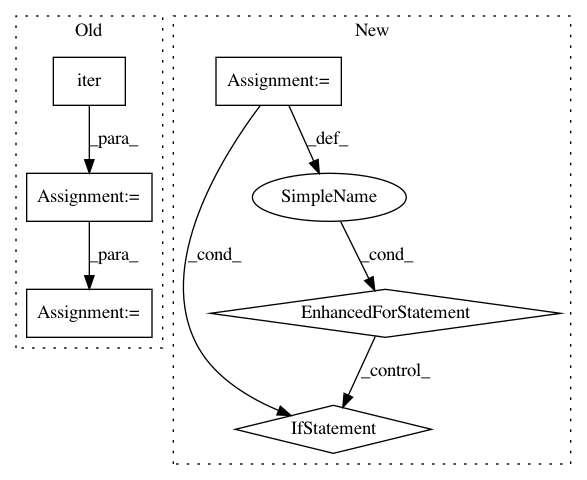

c6607119c25d0178245243ef3fdd3d176dd0d8f2,trackpy/linking/utils.py,,coords_from_df,#Any#Any#Any#,36
Before Change
Empty frames will be returned as empty arrays of shape (0, ndim).
ndim = len(pos_columns)
grouped = iter(df.groupby(t_column)) // groupby sorts by default
// get the first frame to learn first frame number
cur_frame, frame = next(grouped)
cur_frame = int(cur_frame)
yield cur_frame, frame[pos_columns].values
cur_frame += 1
for frame_no, frame in grouped:
frame_no = int(frame_no)
while cur_frame < frame_no:
yield cur_frame, np.empty((0, ndim))
cur_frame += 1
yield cur_frame, frame[pos_columns].values
cur_frame += 1
def coords_from_df_iter(df_iter, pos_columns, t_column):
A generator that returns ndarrays of coords from a generator of
DataFrames. Also returns the first value of the t_column.
ndim = len(pos_columns)
After Change
pos_by_frame = np.split(pos, np.cumsum(time_counts)[:-1])
idx = 0
for time in range(unique_times[0], unique_times[-1] + 1):
if time == unique_times[idx]:
yield time, pos_by_frame[idx]
idx += 1
else:
yield time, np.empty((0, ndim))
def coords_from_df_iter(df_iter, pos_columns, t_column):
A generator that returns ndarrays of coords from a generator of
DataFrames. Also returns the first value of the t_column.
ndim = len(pos_columns)
In pattern: SUPERPATTERN
Frequency: 3
Non-data size: 6
Instances
Project Name: soft-matter/trackpy
Commit Name: c6607119c25d0178245243ef3fdd3d176dd0d8f2
Time: 2020-01-22
Author: anntzer.lee@gmail.com
File Name: trackpy/linking/utils.py
Class Name:
Method Name: coords_from_df
Project Name: idank/explainshell
Commit Name: 1fffcec16578e6bea8de6e685632b3f56713a438
Time: 2013-09-07
Author: idankk86@gmail.com
File Name: explainshell/matcher.py
Class Name: matcher
Method Name: _mergeadjacent
Project Name: dmlc/dgl
Commit Name: 22ccf4365af620d10387b207aa103287c34d9247
Time: 2021-02-08
Author: wmjlyjemaine@gmail.com
File Name: benchmarks/benchmarks/model_speed/bench_pinsage.py
Class Name:
Method Name: track_time